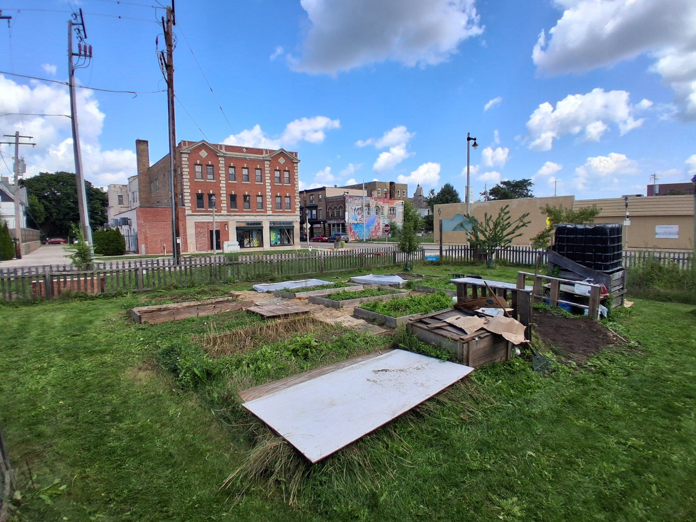
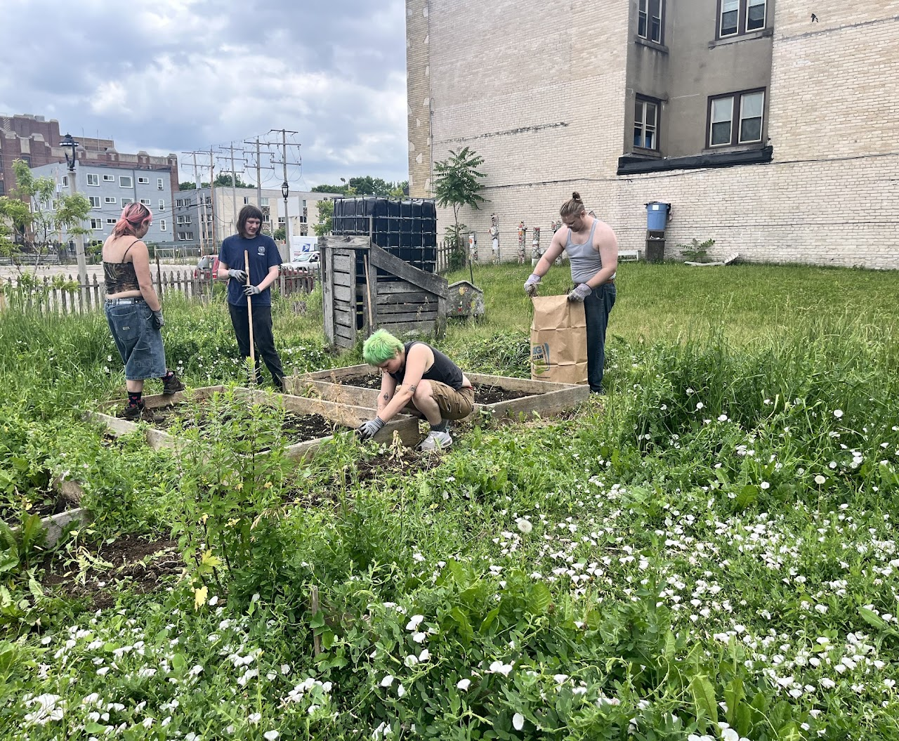
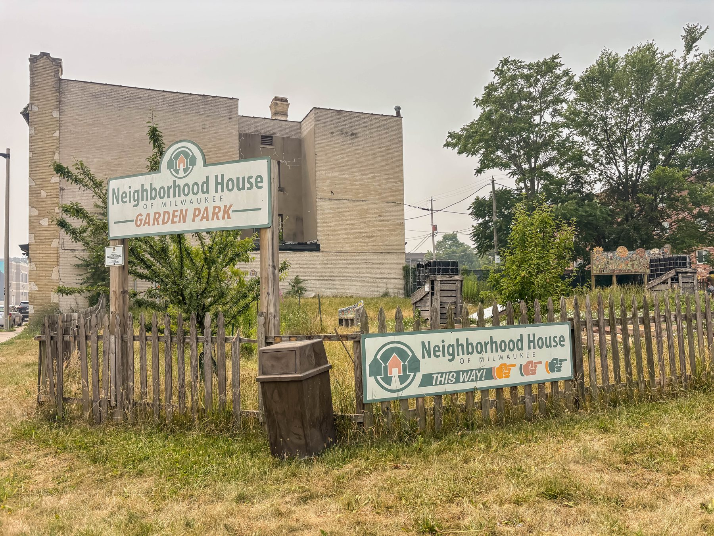

Bring practice into the living world.
Service is where learning encounters responsibility: to place, community, ecology, food, culture, and the people practicing beside us.
Senses does not treat service as an extracurricular requirement added after yoga. It is one of the places where we discover whether practice has actually changed the way we pay attention.
A living curriculum.
The Yoga Arts Garden Initiative is where the school's inner practices meet soil, weather, food, maintenance, art, neighborhood life, and shared responsibility.
Protect.
Restore.
Cultivate.
The practice leaves the mat.
On the mat, a learner practices attention: noticing sensation, breath, habit, resistance, effort, and response. In a garden, those same capacities meet a world that does not exist for us alone.
Soil has conditions. Plants have timing. Weather interrupts plans. A neglected bed tells the truth. Food creates questions about nourishment and access. A public site introduces neighbors, animals, volunteers, children, waste, beauty, conflict, and care. The learner is no longer observing only the self.
YAGI extends yoga into this field of relationship. Ecological stewardship becomes a way to practice reciprocity, patience, observation, adaptation, and responsibility while doing work that has visible consequences.
Notice
Breath · sensation · attention · habit · response
Participate
Soil · food · weather · community · stewardship

The soil participates. The rain participates. The sun participates. Seeds participate. The community participates. The steward participates.
YAGI Field Guide · Yoking Ourselves to Creation
You do not need to be an expert to begin caring for a place.
Visit & Practice
Enter through open community hours, contemplative practice, observation, seasonal offerings, and simple presence. Learn the site before trying to change it.
Learn & Serve
Join garden stewardship, ecological observation, Foodways, arts activations, workshops, restoration, documentation, and community projects.
Teach & Steward
Develop an ongoing relationship with place through the YAGI Steward pathway, helping care for systems, people, learning, and continuity.

The site is not a backdrop. It is part of the curriculum.
Students and community members learn through the changing conditions of a real place.
A garden refuses abstraction. It requires return. Beds need care after the workshop ends. Compost keeps changing. Storms undo work. Fruit ripens whether a schedule is convenient or not. Community members notice whether people come back.
This makes the site an unusually honest teacher. The record includes not only harvests and finished projects, but maintenance, mistakes, weather, experiments, volunteer labor, observations, and the slow development of trust.
Growing is only one part of nourishment.
Food connects ecology to culture, memory, access, hospitality, waste, health, and community exchange.
Within YAGI, Foodways allows learners to follow a wider cycle: soil and seed, harvest and rescue, preparation and preservation, sharing and documentation. A garden becomes more meaningful when what it produces can move into relationship.
This is also where ecology becomes social. Questions of who has access to fresh food, whose recipes are remembered, how surplus is shared, and how community knowledge is preserved belong beside the biological questions of what grows well.

Four beds are clear, ready for the next steps. Two other beds have been started.
Site Operations Lead · Food Not Bombs workday record
The journal keeps ordinary work visible. Restoration is made from many returns, not one dramatic before-and-after.
A place changed through shared care.
The archive follows the work as it happens—from observing the site and tending soil to volunteers restoring beds, planting, documenting, sharing resources, and returning over time.

The photographs are part of the evidence: they preserve community participation, changing conditions, creative work, and the people who make stewardship possible.
Care becomes a discipline when we return after the inspiring moment has passed.
Senses Yoga School · School of Ecology
Read why ecology belongs inside the Vedic Arts →